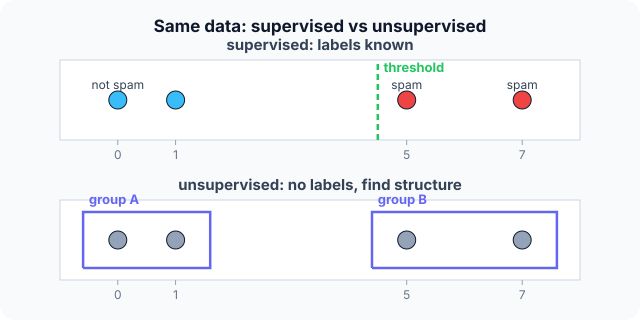

Prerequisites
- Basic statistics: mean, data table with rows and columns.
- Functions: an input $x$ mapped to an output $y$.
- No ML background needed: this is the starting page.
The analogy
Everyday analogy
Think of three ways to learn a language. A teacher corrects every sentence (supervised). You read lots of books with no one explaining, and notice patterns yourself (unsupervised). You move abroad and learn from what works and what gets blank stares (reinforcement).
Machine learning uses the same three set-ups: labelled examples, unlabelled data, or rewards for actions.
How it works
Notation: a dataset has $n$ examples; each has features $x$ (the inputs) and, in supervised learning, a label $y$ (the answer to predict).
Start with the same data, three ways
Emails with link counts $x = [0, 1, 5, 7]$. Labels (1 = spam): $y = [0, 0, 1, 1]$. Predict, then open "Check".
Example: predict before you read
Step 1. With the labels, find a threshold $t$ such that "spam if $x \ge t$" makes no mistakes. Predict $t$.
Check
$t = 5$: emails with 0 and 1 links are below it and are not spam; 5 and 7 are at or above it and are spam. Zero errors.
Step 2. Cover the next line and guess: without labels, how would you split the four values into two groups?
Check
By the big gap: {0, 1} and {5, 7}. No answers were given, but the structure is still visible.
Step 3. A spam filter that gets +1 when the user keeps a delivered email and −1 when they report it as spam. Which paradigm is that?
Check
Reinforcement-style learning: it learns from rewards for its actions, not from a fixed table of correct answers.

Quick recall: Before reading further, cover the text above and say out loud: what does supervised learning need that unsupervised learning doesn't?
Check your answer
Labels: the correct answer $y$ for each training example.
Finish the picture: classification vs regression
Within supervised learning, the type of the label decides the task.
- "Is this email spam?" Predict the task type and the output.
Check
Classification: the output is one of a fixed set of classes (spam / not spam).
- "What will this house sell for?" Predict the task type and the output.
Check
Regression: the output is a real number, such as 312,000 €.
Quick recall: Without scrolling up, say out loud: is predicting tomorrow's temperature classification or regression?
Check your answer
Regression: the answer is a number on a continuous scale, not a category.
Full worked calculation
The page's four emails with link counts $x = [0, 1, 5, 7]$, treated three ways. Supervised: with labels $y = [0, 0, 1, 1]$, we run the code's threshold search and compute the loss of every candidate. Unsupervised: without labels, we score every possible two-group split. Reinforcement: a filter learns the value of "deliver" from a stream of rewards.
| Threshold $t$ | Predictions ($x \ge t$) | Errors | 0-1 loss |
|---|---|---|---|
| 0 | [1, 1, 1, 1] | 2 (emails 1, 2) | 0.50 |
| 1 | [0, 1, 1, 1] | 1 (email 2) | 0.25 |
| 5 | [0, 0, 1, 1] | 0 | 0 |
| 7 | [0, 0, 0, 1] | 1 (email 3) | 0.25 |
-
1Supervised: define the loss
$$L(f) = \frac{1}{n} \sum_{i=1}^{n} \big[f(x_i) \ne y_i\big], \qquad f_t(x) = [x \ge t]$$The 0-1 loss counts mistakes. Learning means searching the candidate rules $f_t$ for the one with the smallest loss: the $\arg\min$ in the page's formula.
-
2Try every threshold
$$L(f_0) = \tfrac24, \quad L(f_1) = \tfrac14, \quad L(f_5) = 0, \quad L(f_7) = \tfrac14$$This is exactly what the double loop in the code does: the outer loop picks $t$, the inner loop counts errors. $t = 5$ wins with no mistakes.
-
3Use the learned rule
$$\text{new email with } x = 3: \quad 3 \ge 5 \text{ is false} \;\Rightarrow\; \text{not spam}$$The labels taught the program where the boundary is. Any value between 1 and 5 would fit the training data equally well; the code keeps the first one it finds.
-
4Unsupervised: score each split
$$\{0\}\{1,5,7\}: 0 + 18.67 = 18.67, \quad \{0,1\}\{5,7\}: 0.5 + 2 = 2.5, \quad \{0,1,5\}\{7\}: 14 + 0 = 14$$Without labels, quality is measured by how tight each group is: the sum of squared distances to the group mean. For $\{0, 1\}$ the mean is 0.5, giving $0.25 + 0.25$; for $\{5, 7\}$ the mean is 6, giving $1 + 1$.
-
5Pick the tightest split
$$\min(18.67,\; 2.5,\; 14) = 2.5 \;\Rightarrow\; \{0, 1\} \text{ and } \{5, 7\}$$It found the same two groups as the labels, but it cannot name them: "spam" is a meaning only labels provide. Here the structure and the labels happen to agree.
-
6Reinforcement: rewards one at a time
$$Q \leftarrow Q + \alpha\,(r - Q), \quad \alpha = 0.5: \quad 0 \xrightarrow{+1} 0.5 \xrightarrow{+1} 0.75 \xrightarrow{-1} -0.125 \xrightarrow{+1} 0.4375$$The filter keeps a running estimate $Q$ of how good "deliver" is. Each reward ($+1$ kept, $-1$ reported) nudges it halfway towards that reward. Nobody ever tells it the correct answer; it only gets feedback on what it did.
What the numbers tell us
Same four numbers, three kinds of learning: labels give a rule with zero errors ($t = 5$); no labels still reveal two groups (score 2.5); rewards give a value estimate (0.44) that keeps updating.
The paradigm is set by the feedback available: correct answers (supervised), none (unsupervised), or rewards for actions (reinforcement).
The rule in plain words
Supervised: learn a function from inputs to known outputs; it's classification if the output is a category and regression if it's a number.
Unsupervised: find structure (groups, directions, anomalies) in inputs alone. Reinforcement: learn which actions earn the most reward over time.
Quick recall: Before you read the code, describe how to learn the best threshold from labelled data, in your own words. Then check below.
Check your answer
Try each data value as the threshold, count how many examples it gets wrong, and keep the threshold with the fewest errors.
The code
Read this code after you have found the threshold by hand. It will make more sense.
double best_threshold(double x[], int y[], int n) { /* y = 1 for spam, 0 otherwise */
double best_t = x[0]; int best_err = n + 1;
for (int i = 0; i < n; i++) { /* try each value as threshold */
int err = 0;
for (int j = 0; j < n; j++) err += (x[j] >= x[i]) != y[j]; /* predict 1 if x >= t */
if (err < best_err) { best_err = err; best_t = x[i]; }
}
return best_t; /* learned from the labels */
}Definition
What you just did, in one line: supervised learning learns a mapping from features to known labels; unsupervised learning finds structure in unlabelled data; reinforcement learning learns actions that maximise reward.
flowchart TD
A{"Do you have the correct answer for each example?"} -->|yes| B{"Is the answer a category or a number?"}
B -->|category| C["Supervised: classification"]
B -->|number| D["Supervised: regression"]
A -->|no| E{"Do you get rewards for actions?"}
E -->|yes| F["Reinforcement learning"]
E -->|no| G["Unsupervised: clustering, PCA, anomalies"]
Putting numbers on it
Quick recall: Before looking at the formula, predict: what quantity does supervised learning try to make small?
Check your answer
The average loss: how far the model's predictions are from the true labels on the training data.
Supervised learning picks, from a family of models, the one with the smallest average loss $L$ on the $n$ training examples:
$$\hat f \;=\; \arg\min_{f} \; \frac{1}{n} \sum_{i=1}^{n} L\big(f(x_i),\, y_i\big)$$For the threshold rule, $L$ is 1 for a wrong label and 0 for a right one, so the average loss is the error rate: $0/4$ at $t = 5$.
| Paradigm | Data | Goal | Example |
|---|---|---|---|
| Supervised (classification) | $(x, y)$, $y$ a class | Predict the class | Spam filter |
| Supervised (regression) | $(x, y)$, $y$ a number | Predict the number | House prices |
| Unsupervised | $x$ only | Find structure | Customer segments, PCA |
| Reinforcement | States, actions, rewards | Maximise total reward | Game-playing agents |
| Self-supervised | $x$, labels made from $x$ | Learn general features | Next-word prediction |
Warning
A low training error does not mean a good model. With so few examples, many thresholds (anything between 1 and 5) fit perfectly; only new, unseen data shows which rule generalises.
Exam tip
Classify any scenario by two questions: "Are there labels?" and "Is the label a category or a number?". Add "Are there rewards for actions?" for reinforcement learning.
Common mistakes
- Calling a numeric prediction "classification" because the numbers are integers (predicting a count is still regression).
- Thinking unsupervised learning has no goal; it optimises things like cluster compactness.
- Judging a model on the same data it was trained on.
Try it yourself
Exercise 1 (warm-up)
Classify each task: (a) recognising handwritten digits 0–9, (b) predicting a car's fuel use in litres per 100 km, (c) grouping news articles by topic with no labels.
Hint
Labels? Category or number?
Answer
(a) supervised classification, (b) supervised regression, (c) unsupervised clustering.
Exercise 2 (a bit harder)
With $x = [0, 1, 5, 7]$ and labels $y = [0, 1, 1, 1]$, which threshold does best_threshold return, and how many errors does it make? Write your answer down before you open it.
Show answer
It tries 0, 1, 5, 7 in order. $t = 1$ predicts [0, 1, 1, 1], exactly the labels, so 0 errors. It returns 1.
Did you know?
Did you know?
Arthur Samuel coined "machine learning" in 1959 for a checkers program that improved by playing against itself: an early reinforcement learner.
Large language models are trained mostly self-supervised: the "label" for each position is just the next word of the text, so no human labelling is needed.
Key points to remember
If you remember one thing from each line, remember the because.
- Supervised learning needs labels because it learns by comparing its predictions with the correct answers.
- Classification and regression differ because one predicts a category and the other a number.
- Unsupervised learning finds structure because without answers, all it can use is how the inputs relate to each other.
- Reinforcement learning uses rewards because the right action is only judged by its consequences.
- Training error can mislead because a model can fit the training data without generalising.
Self-check questions
Answer these in order, out loud. They follow the page, so your answers become the script of your video.
- How are the three paradigms like three ways of learning a language?
Sample answer
A teacher correcting you is supervised; reading on your own and spotting patterns is unsupervised; living abroad and learning from reactions is reinforcement.
- With $x = [0, 1, 5, 7]$ and labels $[0, 0, 1, 1]$, what threshold rule do you learn?
Sample answer
"Spam if $x \ge 5$", which makes no errors on the four emails.
- Why does
best_thresholdcount errors for every candidate threshold?A good answer says what "learning" means here.
Sample answer
Learning here means choosing the rule with the smallest training error, so each candidate must be scored on the labelled data and the best one kept.
- So what are supervised, unsupervised and reinforcement learning, in one sentence each?
Sample answer
Supervised learns from labelled examples, unsupervised finds structure in unlabelled data, and reinforcement learns actions that maximise reward.
- Why can't unsupervised learning tell you which group is "spam"?
A good answer mentions labels.
Sample answer
It never sees labels, so it can find two groups but cannot know what they mean; naming them needs extra information.
- What is the difference between classification and regression?
Sample answer
Classification predicts a category from a fixed set; regression predicts a continuous number.
- Why is a perfect training score not enough to trust a model?
Sample answer
Many models can fit a small training set perfectly; only performance on new data shows whether it generalises.
- If you had to teach this to a friend in 2 minutes, what would you leave out, and why?
Sample answer
I'd leave out self-supervised learning and the loss formula. I'd keep the language analogy, the spam-threshold example with and without labels, and "labels → supervised; no labels → unsupervised; rewards → reinforcement".
External resources
- Google: Introduction to Machine Learning: a short course on ML types and terms.
- scikit-learn: Getting started: fitting, predicting and evaluating models in practice.
- Wikipedia: Machine learning: paradigms and history.
Videos
- YouTube search: StatQuest machine learning intro: StatQuest's gentle overview.